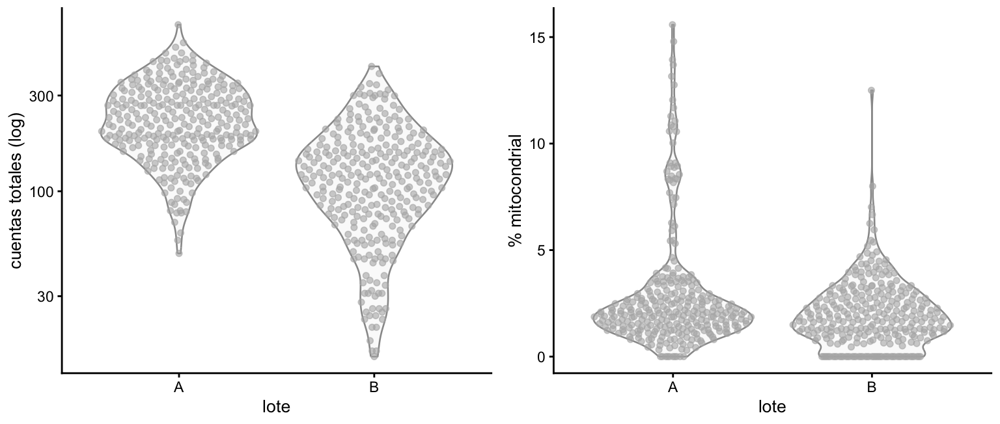
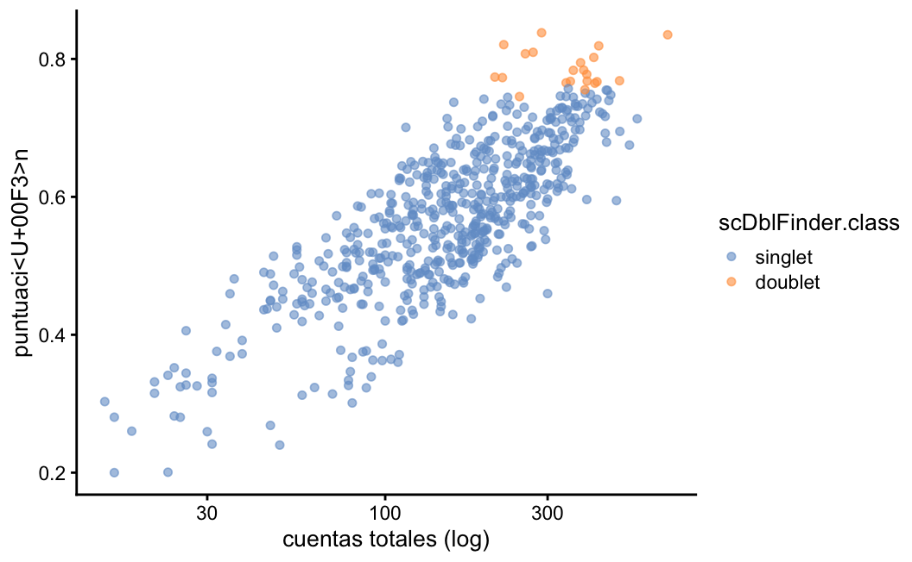

ruta_datos <- "" # <- ruta al objeto que se repartió en claseQC: umbrales fijos contra umbrales adaptativos, y dobletes
Sesión 05 · 1 de septiembre de 2026
Objetivo
Comparar qué células pierde cada criterio de filtrado y marcar dobletes.
NotaCosto de esta práctica
25 min · < 8 GB de RAM. Si en tu máquina tarda mucho más, algo está mal: avisa antes de esperar media hora.
Antes de empezar
Todas las rutas de datos se declaran aquí y en ningún otro lugar del notebook. Si tu copia de los datos está en otro sitio, cambia solo esta celda.
library(SingleCellExperiment)
library(scuttle)
library(scater)
library(scDblFinder)
library(ggplot2)Si no tienes todavía el objeto de clase
La siguiente celda construye un objeto sintético con dos lotes, para que el notebook corra de arriba a abajo aunque no tengas el objeto de la sesión.
Advertencia
Es un objeto simulado: sirve para practicar el procedimiento, no para sacar conclusiones biológicas. Las cifras que se comentan en clase salen del objeto real.
set.seed(20260901)
if (nzchar(ruta_datos) && file.exists(ruta_datos)) {
sce <- readRDS(ruta_datos)
origen <- "objeto de clase"
} else {
n_genes <- 1200; n_A <- 300; n_B <- 300; mt <- 1:40
lambda <- rgamma(n_genes, shape = 0.4, rate = 2)
# Dos lotes que difieren en profundidad Y en dispersión. Lo segundo importa:
# un lote solo más superficial no engaña al criterio global; uno más disperso
# sí, y es lo que ocurre cuando se procesa en otro día u otra máquina.
factor_celula <- c(
rgamma(n_A, shape = 6, rate = 6),
rgamma(n_B, shape = 3, rate = 3) * 0.55
)
lote <- rep(c("A", "B"), c(n_A, n_B))
cuentas <- matrix(
rpois(n_genes * (n_A + n_B), outer(lambda, factor_celula)),
nrow = n_genes,
dimnames = list(paste0("Gen", seq_len(n_genes)),
paste0("Celula", seq_len(n_A + n_B)))
)
rownames(cuentas)[mt] <- paste0("MT-", seq_along(mt))
# 45 células con proporción mitocondrial alta LEGÍTIMA: tejido de alta
# demanda energética, no células muriéndose.
metabolicas <- sample(which(lote == "A"), 45)
cuentas[mt, metabolicas] <- cuentas[mt, metabolicas] * 5
sce <- SingleCellExperiment(list(counts = as(cuentas, "dgCMatrix")))
sce$lote <- lote
sce$grupo <- ifelse(seq_len(n_A + n_B) %in% metabolicas, "metabolico", "otro")
origen <- "objeto SINTETICO de respaldo"
}
cat("Trabajando con el", origen, "\n")Trabajando con el objeto SINTETICO de respaldo Desarrollo
1. Las métricas, antes de cualquier umbral
Ningún criterio se elige sin haber mirado la distribución. addPerCellQCMetrics calcula por célula las cuentas totales, los genes detectados y la proporción de cada subconjunto que se le indique — aquí, el mitocondrial.
mitocondriales <- grep("^MT-", rownames(sce))
sce <- addPerCellQCMetrics(sce, subsets = list(MT = mitocondriales))
summary(sce$sum) Min. 1st Qu. Median Mean 3rd Qu. Max.
15.0 107.2 167.5 184.3 245.8 676.0 summary(sce$subsets_MT_percent) Min. 1st Qu. Median Mean 3rd Qu. Max.
0.000 1.170 1.911 2.421 2.879 15.581 p1 <- plotColData(sce, x = "lote", y = "sum") +
scale_y_log10() + labs(y = "cuentas totales (log)")
p2 <- plotColData(sce, x = "lote", y = "subsets_MT_percent") +
labs(y = "% mitocondrial")
gridExtra::grid.arrange(p1, p2, ncol = 2)
NotaLa pregunta antes de seguir
¿Los dos lotes tienen la misma distribución de cuentas? Si no la tienen, cualquier umbral calculado sobre el conjunto va a tratarlos distinto.
2. Tres criterios sobre los mismos datos
Se aplican los tres al mismo objeto y se comparan a quién descarta cada uno. Ese es el ejercicio: no cuál es el bueno, sino qué se pierde con cada uno.
# a) Umbral fijo, el que aparece en la mayoría de los tutoriales
fijo <- !(sce$subsets_MT_percent < 5 & sce$detected > 200)
# b) MAD sobre el conjunto: adaptativo, pero ciego al lote
global <- perCellQCFilters(sce, sub.fields = "subsets_MT_percent")$discard
# c) MAD por lote: cada lote se compara consigo mismo
por_lote <- perCellQCFilters(
sce, sub.fields = "subsets_MT_percent", batch = sce$lote
)$discard
es_B <- sce$lote == "B"
data.frame(
criterio = c("fijo de tutorial", "MAD global", "MAD por lote"),
descarta = c(sum(fijo), sum(global), sum(por_lote)),
pct_lote_A = round(100 * c(sum(fijo & !es_B), sum(global & !es_B),
sum(por_lote & !es_B)) / sum(!es_B), 1),
pct_lote_B = round(100 * c(sum(fijo & es_B), sum(global & es_B),
sum(por_lote & es_B)) / sum(es_B), 1)
) criterio descarta pct_lote_A pct_lote_B
1 fijo de tutorial 495 71.0 94.0
2 MAD global 56 11.7 7.0
3 MAD por lote 51 12.7 4.3
ImportanteLo que hay que mirar en esa tabla
El umbral fijo descarta casi todo: sus números vienen de otro experimento, con otra profundidad. Es lo que pasa al copiar un umbral sin contrastarlo con los datos propios.
Entre global y por lote la diferencia es más sutil y más interesante: el global castiga al lote B mucho más que al A, no porque sus células estén peor, sino porque se comparan contra una mediana que no es la suya.
3. Lo que ningún umbral resuelve
Las 45 células con proporción mitocondrial alta son legítimas: tejido de alta demanda energética. Ningún criterio de los tres las distingue de una célula dañada.
if ("grupo" %in% colnames(colData(sce))) {
metab <- sce$grupo == "metabolico"
data.frame(
criterio = c("fijo de tutorial", "MAD global", "MAD por lote"),
metabolicas_descartadas = c(sum(fijo[metab]), sum(global[metab]),
sum(por_lote[metab])),
de_un_total_de = sum(metab)
)
} criterio metabolicas_descartadas de_un_total_de
1 fijo de tutorial 43 45
2 MAD global 35 45
3 MAD por lote 35 45
Advertencia
Los tres las pierden. La proporción mitocondrial no distingue una célula dañada de una célula metabólicamente activa — mide lo mismo en ambas. Si el tejido tiene poblaciones así, el umbral hay que fijarlo por tipo celular o declarar explícitamente que esa población se perdió.
4. Dobletes
Un doblete es una gota que capturó dos células. No se detecta por tener muchas cuentas: se detecta porque su perfil parece la mezcla de dos perfiles distintos.
sce <- scDblFinder(sce, samples = "lote")
|
| | 0%
|
|=================================== | 50%
|
|======================================================================| 100%table(sce$scDblFinder.class, sce$lote)
A B
singlet 287 292
doublet 13 8El argumento samples importa: la simulación de dobletes se hace dentro de cada lote, porque dos células de lotes distintos nunca compartieron una gota.
plotColData(sce, x = "sum", y = "scDblFinder.score",
colour_by = "scDblFinder.class") +
scale_x_log10() + labs(x = "cuentas totales (log)", y = "puntuación")
5. Aplicar la decisión
sce$descartar <- por_lote | sce$scDblFinder.class == "doublet"
sce_filtrado <- sce[, !sce$descartar]
cat("antes:", ncol(sce), "celulas | despues:", ncol(sce_filtrado), "\n")antes: 600 celulas | despues: 530
NotaEsta es una fila de tu tabla de decisiones
Anótala tal cual: qué criterio elegiste, con qué parámetro, cuántas células perdiste y qué alternativa descartaste. Lo vas a necesitar el 17 de septiembre.
Registro de sesión
sessionInfo()R version 4.4.3 (2025-02-28)
Platform: aarch64-apple-darwin20.0.0
Running under: macOS 26.5.2
Matrix products: default
BLAS/LAPACK: /Users/yibm/.claude-science/conda/envs/sc-r/lib/libopenblas.0.dylib; LAPACK version 3.12.0
locale:
[1] C
time zone: America/Mexico_City
tzcode source: system (macOS)
attached base packages:
[1] stats4 stats graphics grDevices utils datasets methods
[8] base
other attached packages:
[1] scDblFinder_1.23.4 scater_1.34.1
[3] ggplot2_4.0.3 scuttle_1.16.0
[5] SingleCellExperiment_1.28.0 SummarizedExperiment_1.36.0
[7] Biobase_2.66.0 GenomicRanges_1.58.0
[9] GenomeInfoDb_1.42.0 IRanges_2.40.0
[11] S4Vectors_0.44.0 BiocGenerics_0.52.0
[13] MatrixGenerics_1.18.0 matrixStats_1.5.0
loaded via a namespace (and not attached):
[1] tidyselect_1.2.1 viridisLite_0.4.3 dplyr_1.2.1
[4] vipor_0.4.7 farver_2.1.2 viridis_0.6.5
[7] Biostrings_2.74.0 S7_0.2.2 bitops_1.0-9
[10] RCurl_1.98-1.19 fastmap_1.2.0 bluster_1.16.0
[13] GenomicAlignments_1.42.0 XML_3.99-0.23 digest_0.6.39
[16] rsvd_1.0.5 lifecycle_1.0.5 cluster_2.1.8.3
[19] statmod_1.5.2 magrittr_2.0.5 compiler_4.4.3
[22] rlang_1.3.0 tools_4.4.3 igraph_2.3.3
[25] yaml_2.3.12 data.table_1.18.4 rtracklayer_1.66.0
[28] knitr_1.51 labeling_0.4.3 dqrng_0.3.2
[31] S4Arrays_1.6.0 htmlwidgets_1.6.4 xgboost_3.4.0.1
[34] curl_7.1.0 DelayedArray_0.32.0 RColorBrewer_1.1-3
[37] abind_1.4-8 BiocParallel_1.40.0 withr_3.0.3
[40] grid_4.4.3 beachmat_2.22.0 edgeR_4.4.0
[43] scales_1.4.0 MASS_7.3-66 cli_3.6.6
[46] rmarkdown_2.31 crayon_1.5.3 generics_0.1.4
[49] metapod_1.14.0 otel_0.2.0 rjson_0.2.23
[52] httr_1.4.8 ggbeeswarm_0.7.3 zlibbioc_1.52.0
[55] parallel_4.4.3 XVector_0.46.0 restfulr_0.0.16
[58] vctrs_0.7.3 Matrix_1.7-6 jsonlite_2.0.0
[61] BiocSingular_1.22.0 BiocNeighbors_2.0.0 ggrepel_0.9.8
[64] irlba_2.3.7 beeswarm_0.4.0 locfit_1.5-9.12
[67] limma_3.62.1 glue_1.8.1 codetools_0.2-20
[70] cowplot_1.2.0 gtable_0.3.6 BiocIO_1.16.0
[73] UCSC.utils_1.2.0 ScaledMatrix_1.14.0 tibble_3.3.1
[76] pillar_1.11.1 htmltools_0.5.9 GenomeInfoDbData_1.2.13
[79] R6_2.6.1 evaluate_1.0.5 lattice_0.22-9
[82] Rsamtools_2.22.0 scran_1.34.0 Rcpp_1.1.2
[85] gridExtra_2.3.1 SparseArray_1.6.0 xfun_0.60
[88] pkgconfig_2.0.3 Lo que te llevas
- Las métricas se miran antes de elegir un umbral, no después.
- Un umbral copiado de un tutorial viene de otro experimento con otra profundidad. Casi nunca sirve sin contrastarlo.
perCellQCFiltersconbatch=compara cada lote consigo mismo. Sin ese argumento, el lote más superficial parece el peor.- La proporción mitocondrial no distingue célula dañada de célula metabólicamente activa.
scDblFinderconsamples=simula dobletes dentro de cada lote, que es la única forma en que se producen.
Para pensar
Filtraste con el criterio por lote y descartaste unas cuantas células. Si el lote B resultara ser todo un tipo celular —porque se procesó una condición distinta ese día— ¿cómo lo notarías? ¿Y qué mirarías antes de filtrar para descartar esa posibilidad?